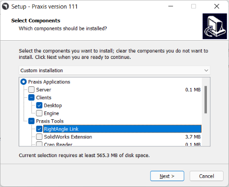
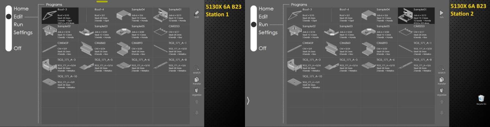
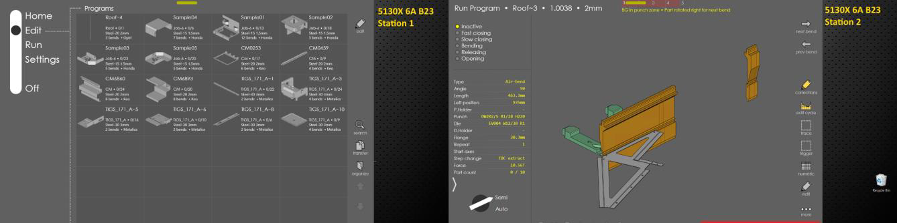
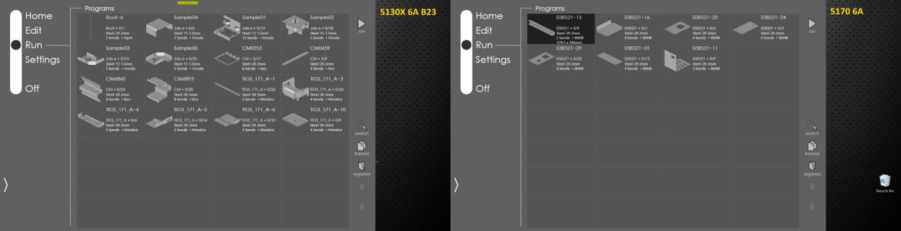

Multiple RA stations can be linked to Praxis for the same or different bending machines. Use the installation steps listed in the setup section. Select the Praxis desktop client with RightAngle Link when prompted by the Praxis setup.

Launch Praxis and connect it to the Praxis server. Now launch RightAngle. It should be linked to the Praxis for the same 5130X 6A B23 machine. And both stations display the same machine queue.

Loading a program to run on one station, removes it from the queue such that the other stations can work on the remaining programs. This behavior would be useful in carrying out the load balanced, collaborative production.

Use settings • other setting • machine settings RightAngle command in Service mode to change the machine. Now switch to Praxis and plan a few jobs/parts on 5170 6A demo machine. The second RA station displays 5170 production queue.
